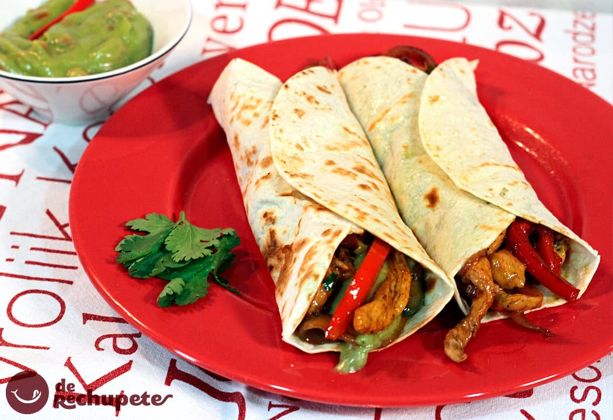
Todas mis recetas
Platos principales
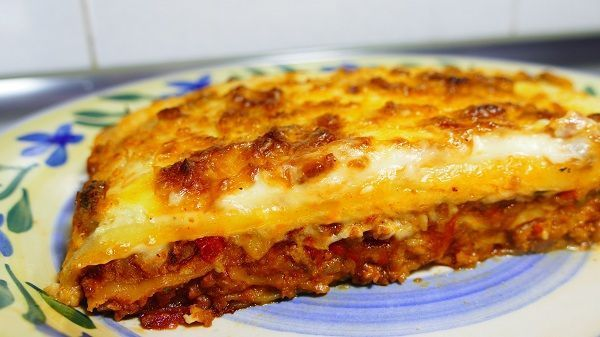
Lasaña de carne picada con bechamel
Estofado de ternera con patatas y verduras
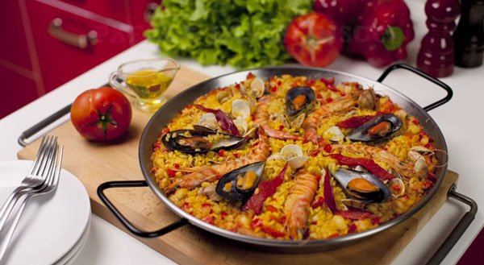
Paella de Marisco
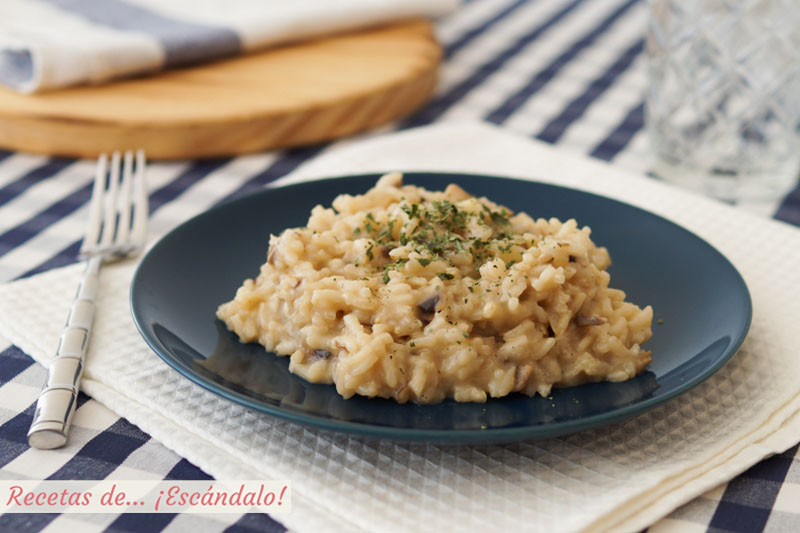
Risotto de champiñones
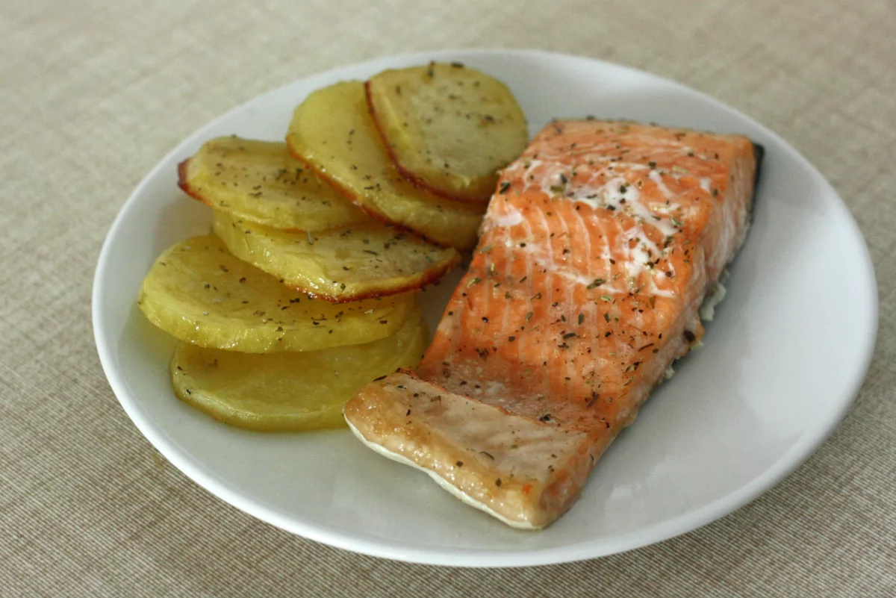
Salmón con patatas al horno
Vegetarianas

Pasta con salsa de coliflor y pimienta de Jamaica

Mijo cremoso con lentejas, hortalizas y shiitake

Calabacines rellenos de arroz negro y calabaza
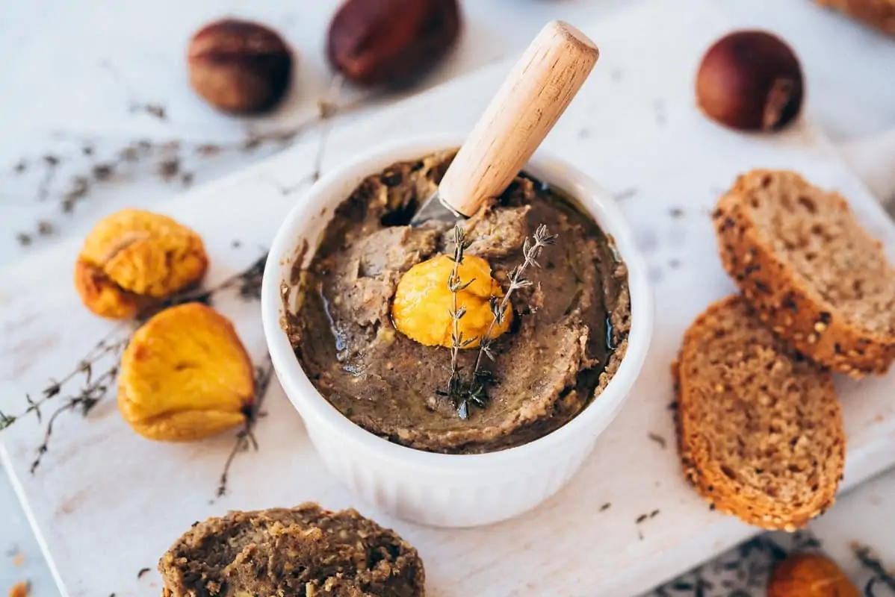
Paté vegano de champiñones y castañas
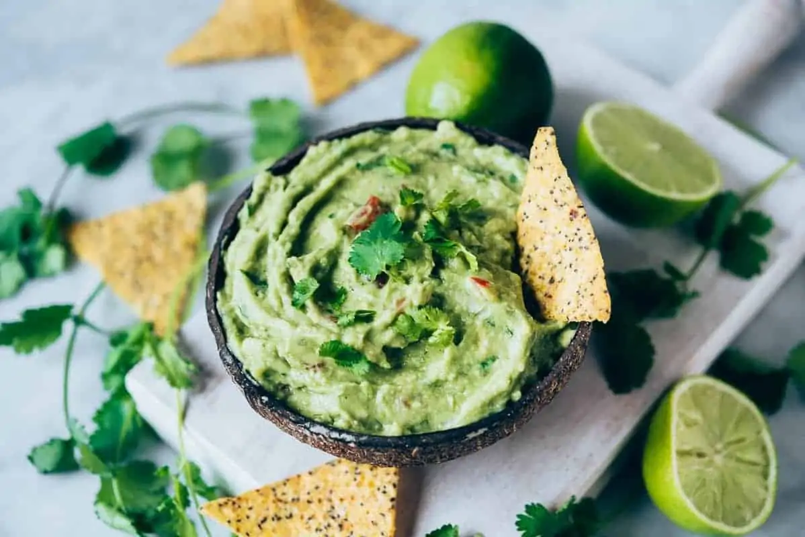
Guacamole Casero
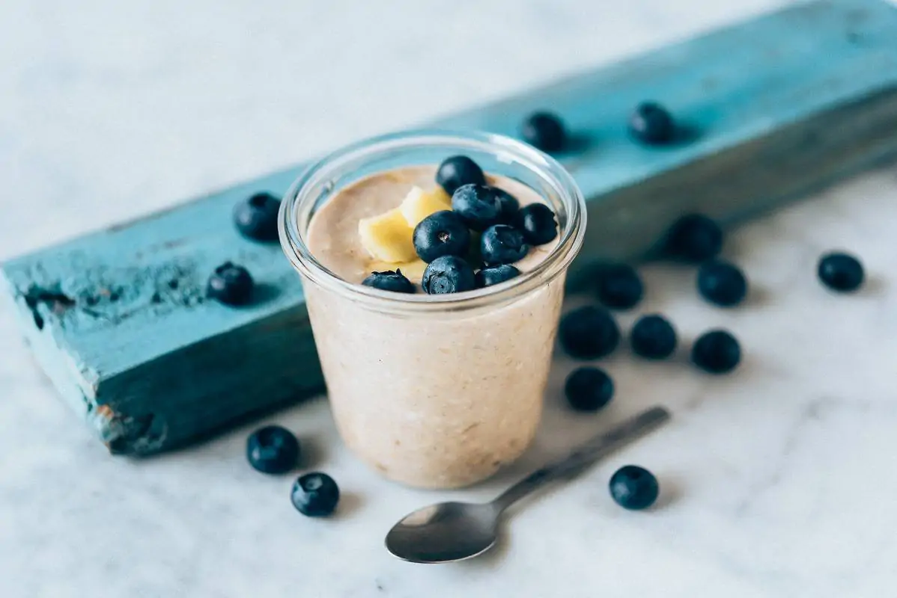
Desayuno de avena y platano con proteina en polvo
Postres

Tarta de chocolate sin horno
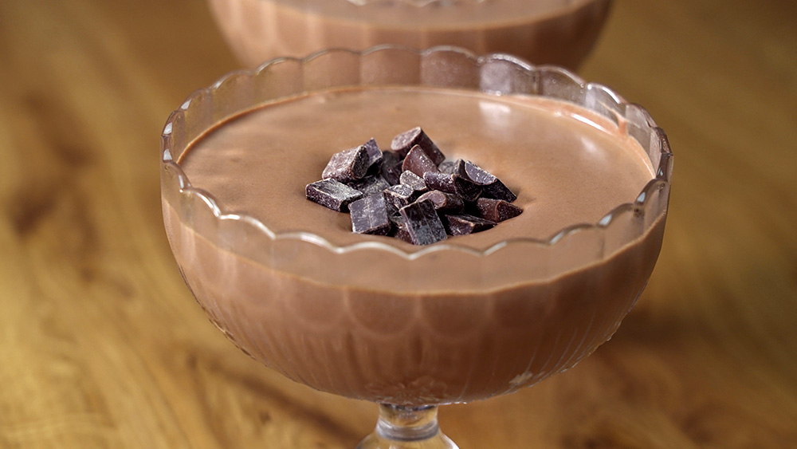
Mousse de chocolate con Baileys

Galletas de avena, rosa y lima
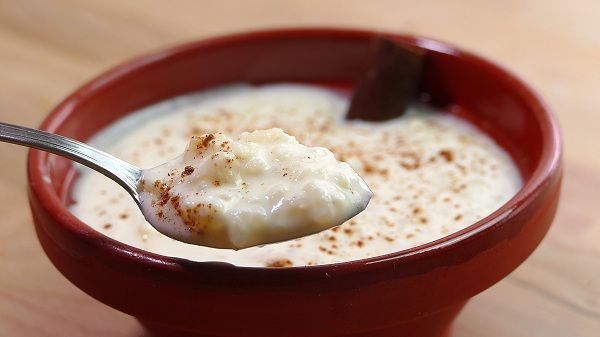
Arroz con leche
Crepes de chocolate, pátano y nueces
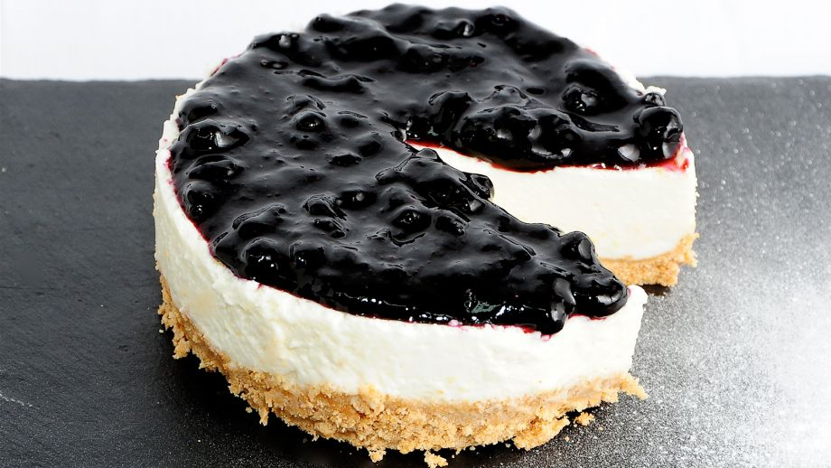